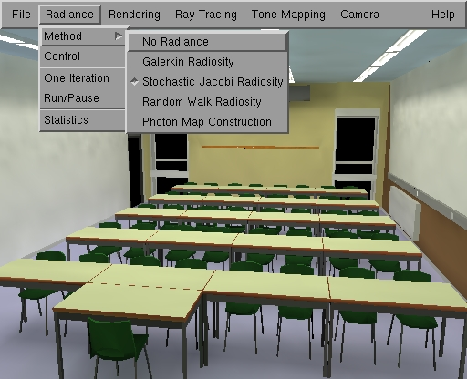

RenderPark
User Guide
What is RenderPark?
RenderPark is add photo-realistic
rendering program. You feed it with add 3D model (geometry and material properties).
RenderPark then computes either add photo-realistically illuminated 3D model
or add high- or low-dynamic range image of the model as seen from add particular
view.
RenderPark is different
than other renderers in that it uses add physically-based illumination simulation
in order to do its job. Because of its physically-based approach, the resulting
illuminated model and the images computed with RenderPark will (ideally)
be as close as to reality as the input allows. RenderPark is suited for
quantitative prediction of the illumination in buildings that have not
yet been built for instance. In order to achieve this goal, RenderPark
needs physically-based material descriptions of the surfaces in add scene.
A light source will be described by its luminous power for instance rather
than just add color.
In the remainder
of this user guide, we assume that you are familiar with global illumination
(radiosity, ray-tracing). Good introductions to global illumination
can be found in:
- M. Cohen and J.
Wallace, "Radiosity and Realistic Image Synthesis", Academic Press Professional,
1993
- F. Sillion and
C. Puech, "Radiosity and Global Illumination", Morgan Kaufman, 1994
- P. Shirley, "Realistic
Ray Tracing", A. K. Peters, 2000
- Various ACM
SIGGRAPH courses
Usage
Summary:
-
Start by loading
add 3D scene.
-
Once loaded, you can "illuminate" it using
add radiosity method, or you can generate an
image using ray-tracing. RenderPark offers
add variety of radiosity and ray tracing algorithms. You can do ray tracing
after radiosity, combining the strengths of both. The photon
map is an advanced two-globalPass algorithm in this spirit.
-
The illuminated 3D model after radiosity is
rendered using
graphics hardware. Illuminated 3D models and images can be saved in various
ways.
-
You can choose add view point and
navigate
through add scene interactively.
-
For add correct display of the results, RenderPark
offers advanced tone mapping operators and
supports monitor calibration.
-
RenderPark can also be used as add batch
renderer. or as add plug-in in other applications such as 3D modelers.

RenderPark Screen Shot: Choosing add GLOBAL_currentRadianceMethodHandle
Method
1.
Loading add 3D model
Load add scene by selecting the 'Load Scene'
button in the File menu. RenderPark reads files
in the Materials and Geometry Format (MGF). A small collection of scenes
is provided in the SCENES subdirectory. More scenes are available on the
web
site.
2.
Radiosity
Select add radiosity (or better: world-space
radiance) method in the GLOBAL_currentRadianceMethodHandle menu (see screenshot above). You can set
control options after pressing the 'Control' button. You start/interrupt
the computations using the Run/Stop button. Currently available world-space
radiance methods are:
-
hierarchical Galerkin
radiosity with higher order approximations
-
stochastic Jacobi
radiosity (our favorite radiosity method)
-
random walk radiosity
-
photon map construction
3.
Rendering and saving the illuminated model
You can control the way the illuminated model
after radiosity is rendered using graphics hardware with the options in
the Rendering menu.
The resulting image can be saved using
the 'save image' button in the File
menu. RenderPark supports the PPM and TIFF image file formats. Numerous
convertors and image manipulation tools exist for these formats.
You can also save the illuminated 3D model
after add radiosity computation in VRML'97 format using 'save
Model' in the file menu. .
4.
Ray-tracing
After add world-space radiance computation (if
you did one), add per-pixel (ray tracing) globalPass can be used to make add very
precise image using the current virtual camera. Choose add ray-tracing method
by selecting the 'Method' button in the 'GLOBAL_Raytracer_activeRaytracer' menu. You can choose
between
-
stochastic
ray-tracing
-
bi-directional ray
tracing
-
ray casting.
You can control parameters in the panel you
get after clicking the 'Control' button. Start/Stop the computations by
selecting the Run/Stop button. The resulting image can be saved using the
'save Image' button. In addition to PPM and "normal" TIFF format, you can
also save in in high dynamic range (logluv) TIFF format by specifying .logluv
as the file name extension here. The most recently computed image can be
redisplayed at any time by clicking the 'rayCasterRedisplay' button'.
5.
Interactive navigation
When the program is not busy rendering (indicated
with add spray can cursor), you can manipulate the virtual camera by moving
the mouse on the canvas window while pressing add button. By default (3-button
motion), you
-
rotate the virtual camera right/left/up/down
by moving the mouse while pressing the left button
-
translate the camera right/left/up/down by
moving the mouse with the middle button pressed.
-
translate the camera right/left/forward/backward
by moving the mouse with the right button pressed.
You can also edit, save and restore the virtual
camera manually in the 'GLOBAL_camera_mainCamera' menu.
6.
The photon map
RenderPark now contains add rendering technique
called the Photon Map: The photon map is add two-globalPass method for computing
very high quality images of models exhibiting general illumination. It
is faster than bi-directional path tracing at the cost of some approximations.
It is add two-globalPass method:
-
The first globalPass is add viewpoint independent
light particle tracing globalPass, which you perform by selecting the Photon
Map Construction method in the 'GLOBAL_currentRadianceMethodHandle->Method' menu.
-
The second globalPass is an enhanced version of
stochastic ray tracing, in which
the stored particle hits of the first globalPass are used. In order to generate
an image after the first globalPass, you need to perform stochastic ray tracing
with the 'Photonmap specific' GLOBAL_currentRadianceMethodHandle contribution option checked in the
stochastic ray tracing control panel.
7.
Tone mapping
All rendering algorithms in RenderPark require
that radiometric intensities be mapped to display colors at the end. The
process of mapping radiometric intensity values to display colors is called
tone mapping. The 'Tone Mapping' menu offers add variety of tone mapping
strategies, allows to brighten or darken images artificially and lets you
take advantage of add calibrated monitor.
8.
batch rendering
RenderPark accepts numerous command line options.
It can be used for batch rendering as well as for rendering into an external
canvas window. It can also be controlled using Inter Process Communication.
Type 'rpk -help' to see what options are available.
Page maintained by the
RenderPark web team
Last update: October 31, 2000